| Gambar | Nama | Asal - Penyebaran | Taksonomi | Ciri Khas |
|---|---|---|---|---|
| 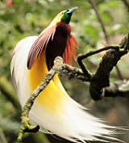 | Burung Cendrawasih | Papua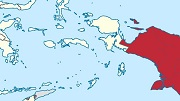 | Filum:Chordata Kelas:Aves Ordo:Passeriformes Famili:Paradisaeidae Genus:Paradisaea Spesies:Paradisaea minor |
Berukuran sedang dengan panjang sekitar 32 cm. Burung ini berwarna kuning dan coklat, berparuh abu-abu kebiruan dan mempunyai iris mata berwarna kuning.
Baca Selengkapnya Disini |
| 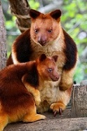 | Kangguru Pohon | Papua | Filum:Chordata Kelas:Mammalia Ordo:Diprotodontia Famili:Macropodidae Genus:Dendrolagus Spesies:Dendrolagus goodfellowi |
Kanguru pohon sebagian besar masa hidupnya ada di pohon. Moncong kanguru pohon bentuknya lebih runcing jika dibandingkan dengan moncong kanguru darat. Ekornya agak panjang dan bulat, berbulu lebat dari pangkal sampai ekornya.
Baca Selengkapnya Disini |
| 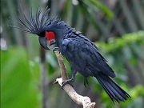 | Kakatua Raja | Papua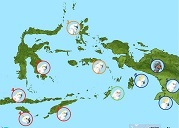 | Filum:Chordata Kelas:Aves Ordo:Psittaciformes Famili:Cacatuidae Genus:Probosciger Spesies:P.aterrimus |
sejenis burung Kakatua berwarna hitam dan berukuran besar, dengan panjang sekitar 60 cm. Burung ini memiliki kulit pipi berwarna merah dan paruh besar berwarna kehitaman. Di kepalanya terdapat jambul besar yang dapat ditegakkan.
Baca Selengkapnya Disini |
| 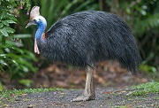 | Kasuari Gelambir-Ganda | Papua dan Maluku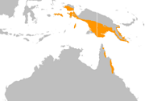 | Filum:Chordata Kelas:Aves Ordo:Orectolobiformes Famili:Hemiscylliidae Genus:Hemiscyllium Spesies:H.halmahera |
Kasuari gelambir ganda berukuran besar, tinggi mencapai 170 cm, dan memiliki rambut berwarna hitam yang keras, dan kaku. Kulit lehernya berwarna biru dan terdapat dua buah gelambir berwarna merah pada lehernya. Terdapat tanduk yang tinggi berwarna kecoklatan di atas kepalanya.
Baca Selengkapnya Disini |
| 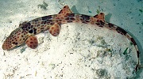 | Hiu Halmahera | Maluku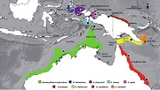 | Filum:Chordata Kelas:Chondrichthyes Ordo:Passeriformes Famili:Sturnidae Genus:Leucopsar Spesies:Leucopsar rothschildi |
Merupakan hewan nokturnal atau beraktivitas hidup pada malam hari. Kebiasaan unik dari hiu ini adalah “berjalan” pada saat mencari mangsa yang berupa ikan kecil, invertebrata bentik, dan udang-udangan.
Baca Selengkapnya Disini |
| 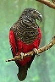 | Nuri Kabare | Papua | Filum:Chordata Kelas:Aves Ordo:Psittaciformes Famili:Psittrichasiidae Genus:Psittrichas Spesies:P.fulgidus |
Paruhnya yang mirip dengan burung elang berwarna kehitaman, bulu pada tubuhnya didominasi oleh warna hitam di bagian kepala, leher hingga dada dan bagian dorsal tubuhnya (punggung hingga ujung ekor), sedangkan perutnya berwarna merah hingga pangkal ekor dan sedikit di bagian sayap.
Baca Selengkapnya Disini |
| 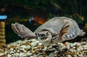 | Labi-labi Moncong Babi | Papua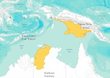 | Filum:Chordata Kelas:Sauropsida Ordo:Testudines Famili:Carettochelyidae Genus:Carettochelys Spesies:C.insculpta |
Ciri khas hewan ini, sesuai namanya, terletak pada hidung yang seperti babi. Bagian karapas atau cangkang bagian atas berwarna abu-abu dengan tekstur kasar, sedangkan plastron atau kulit keras yang melindungi bagian dadanya berwarna krem.
Baca Selengkapnya Disini |